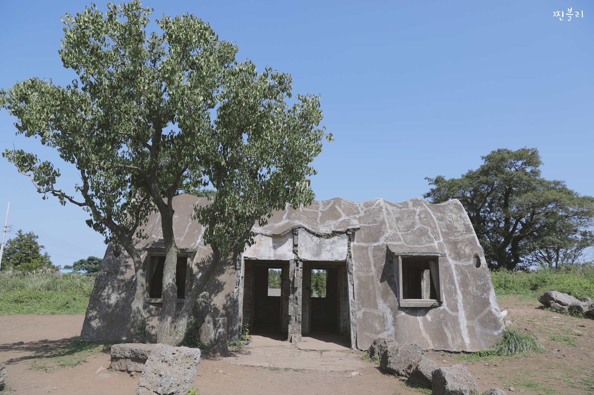
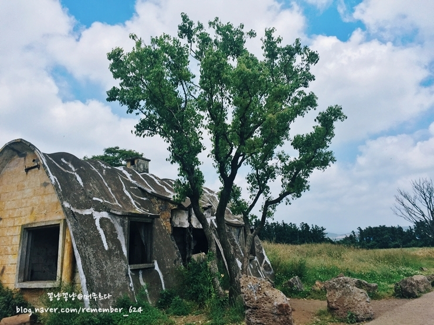
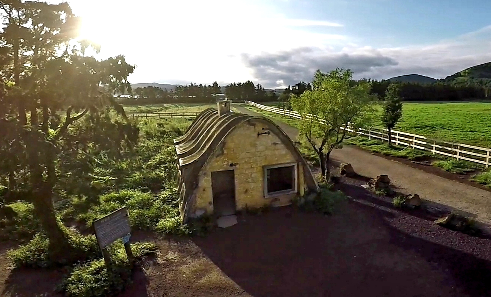

성이시돌목장
#제주도 #성이시돌목장 #목장 #경관/포토 #커플
insta
map
매일 09:00 - 18:00
월요일 휴무 1월1일,설날 및 추석
064-710-4150
성이시돌 목장은 한림읍 금악리에 있는 목장으로 아름다운 경관과 독특한 건축물인 테쉬폰을 볼 수 있는 곳이다.
성이시돌 목장 내 테쉬폰은 이라크 바그다드 지역 인근 테쉬폰(Cteshphon)이라 불리는 곳에서 처음 건축 양식이 시작되어 건축물 이름이 테쉬폰이 되었다.
우리나라에서는 유일하게 성이시돌목장에만 있는 귀한 건축물이다. 테쉬폰과 성이시돌 목장은 스냅 및 웨딩촬영의 명소이기도 하다.
제주 제주시 한림읍 산록남로 53 [지번]금악리 116